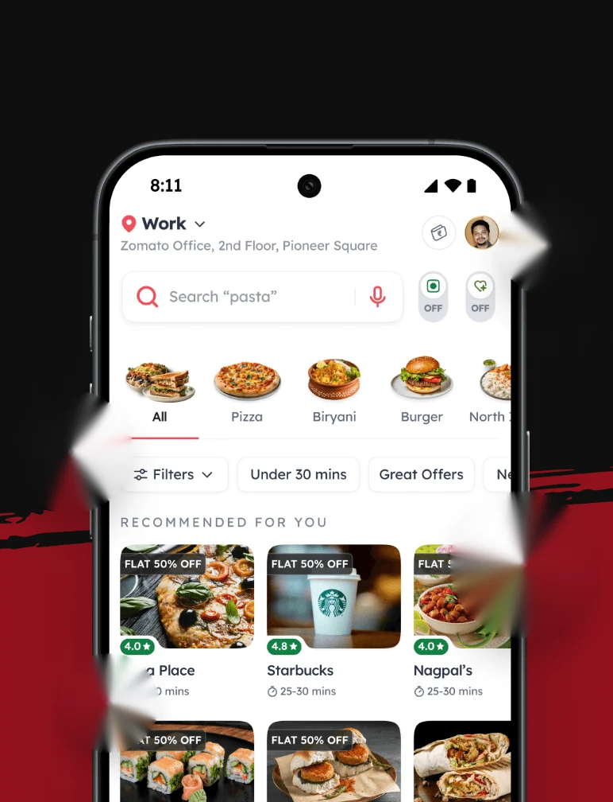
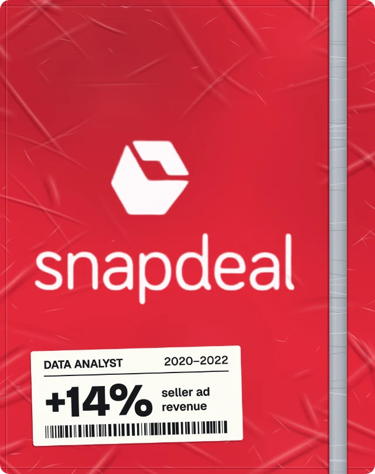

Hi, I’m Adi.
I worked on agentic AI products at Self.
- 2026AI Product Manager intern, Self
- NowM.S. Engineering Design Innovation, Northwestern
- BeforeSenior Product Analyst, Zomato
AI product
AI Product Manager internJun to Aug 2026 · multi-step agent pipelines, with a human checkpoint
where ~80% of orders startSenior Product Analyst Human-centered design3 partner projects · Northwestern Human-centered design · NorthwesternJPMorgan Chase · AI payments for caregivers Zomato · Food Rescue ~50% less food waste, pan-IndiaLead Product Analyst Snapdeal

~10Mdaily users on Zomato’s home screen,where ~80% of orders startSenior Product Analyst Human-centered design3 partner projects · Northwestern Human-centered design · NorthwesternJPMorgan Chase · AI payments for caregivers Zomato · Food Rescue ~50% less food waste, pan-IndiaLead Product Analyst Snapdeal

+14% ads revenueData AnalystTimeline
My whole path, newest at the top. Scroll and the marker travels back through the years. ClickTap any stop to open its page.
Work5 roles, 2020 to 2026
School2 universities